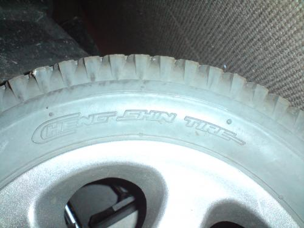
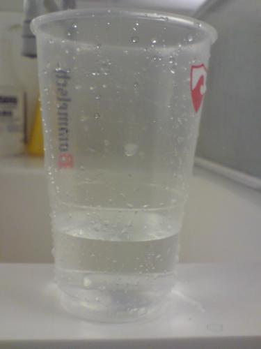

After deciding that we were going to put tire tracks on the front wheel, we had to decide how we were going to mount them on the wheelchair.
If we were going to make it into some sort of add-on, that would be usable on normal wheelchairs, we would need to find a way to attach it without the need to completely rebuild he chair.
So the decision was made to put a track around the normal front tire, expanded to a pulley which would be attached in front of the wheel.
Making the tracks:
During the Fabacademy the subject of moulding and casting was brought up. In this lesson we would make a mould in which we could cast similar items. This would be a perfect opportunity to make track shoes, which needed to be similar.
A track shoe is a part of a tire track. These parts can be attached to each other to make a track.
First drawings:
There are a few things to keep in mind while designing the shoe.
Photo’s of the wheel and tire:

Photo’s of tire profile:
To make the mould we needed a 3d design of the shoe to cut out of chemical wood. The mould is formed around the cut-out. Michiel decided to model the shoe in Blender.
Photo’s Blender:
Make a positive -> use it to make a negative -> use the negative to make lots of positives
Photo’s carving the positive:

Educational moment: When you want to cut out a rough carving with a 6mm drill, and want to do a finishing carving with a 3mm, you should make sure that the drills have the same length, so they can both cut the same depth.
Unfortunately we have to do the carving again, and to make sure it goes alright we’ll be using the same drill for as well the roughing as the finishing.
Second try:
After the first attempt there had to be made a new mal. To speed up the process, an attempt was made on the bigger cutter, the BZT pf 1000c Milling Machine. This was a lot faster. We were able to do a roughing and a finishing in one day, but the result was a lot less smooth then made on the modula.
Picture mall on BZT:
So a decision was made to return to the modula. First the bottom half of the track shoe would be milled out.
The milling was done in three cycles. A rouging and finishing with a 6mm drill, followed by a finishing of the top layer with a 3mm drill.
Screenshots of the modula screens:
After milling for 2 days the first 2 stages were done, and after some re-aligning the third stage was finished within a couple of hours.
Pictures milled out positive
The modula was reset, and the milling job for the top half was activated. This part would consist of only to jobs, a roughing and a finishing both with a 6mm drill.
Meanwhile the negative of the bottom half was made by pouring a silicone rubber compound in the milled out shape. This compound was made from the materials that had to be combined.
Pictures of the materials and the mixture.
Before pouring in the mixture, the milled out shape was sprayed with a mold release spray, so the rubber would come out of the form more easily. Then the mixture for the rubber compound was poured in.
Pictures of the spray and the pouring.
Educational moment, The mixture has to be stirred very thoroughly. We could have stirred it for a bit longer, but the end result is acceptable. Also when pouring in the mixture you should somehow vibrate the part in which you are pouring the mixture to decrease the amount of air bubbles.
After 2 days the rubber had hardened out. So the bottom part of the mould was done. The modula was still milling though, so we could made the second part of the mould yet.
Pictures of the rubber mould
After this the upper part of the mould was milled out. It turned out to be a three day job for the modula and it didn't even complete the job. Halfway the finishing part it stopped. But since we realy wanted to start casting we decided to use this any how.
Pictures of the milled out top part:
This part was filled up with a silicone rubber compound to make the top half of the mould.
The last step after having the complete nould was to cast the final piece. Since we were going to use it on road, we wanted to use a rubber that was close to the one we'd like to use in the end product.
After some research we came on a rubber called: Vytaflex 60. When mixed it can be poured in to the mould, and when dried its a sturdy rubber with still some flexability.

After 2 days of drying the final result was revealed: